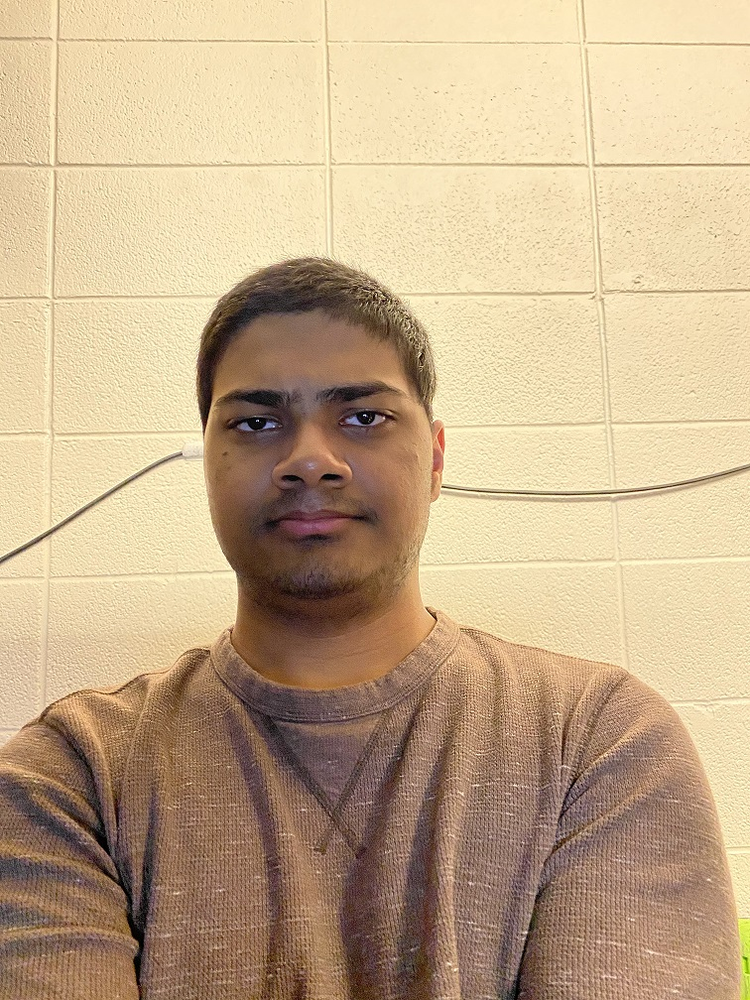

About
 Hi, my name is Vidhu Naik! I am a first year Computer Science major at Rose-Hulman Institute of Technology. I am very passionate about my field, which is why I chose it. Because I am a first year student, I don't have much experience working in the industry, so I am trying to secure an internship to help me understand my major better and improve my chances of getting a good job when I graduate.
Computer Science is only one of my passions. I am also very passionate about music, mainly playing my alto saxophone. In high school, I made it to the All-State Band three years in a row and those experiences were great. Although I am not pursuing a career in music, I still use it to keep myself entertained. I also play a lot of video games in my free time. Lately I have mostly been playing Super Smash Bros. but I prefer shooters such as Call of Duty.